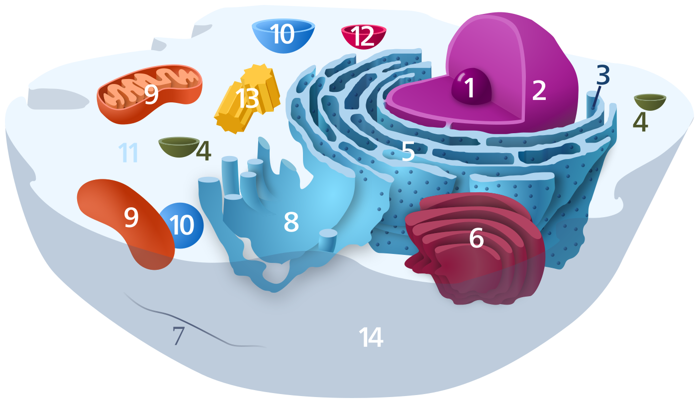
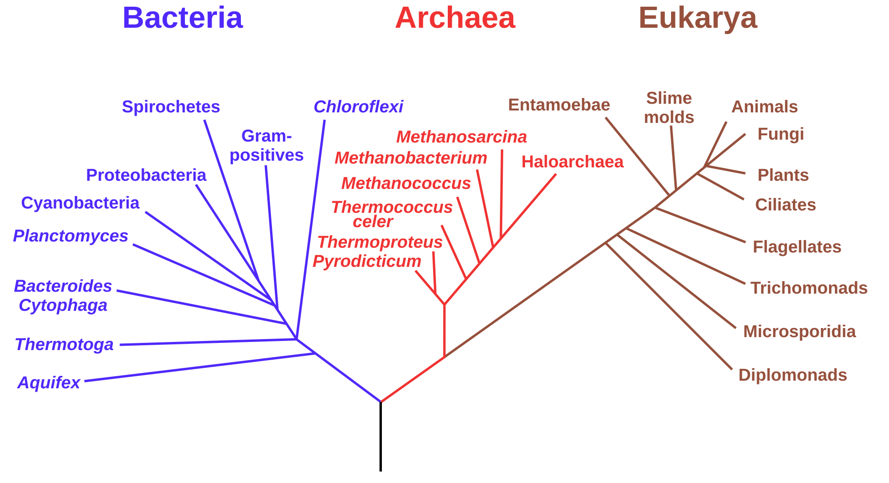
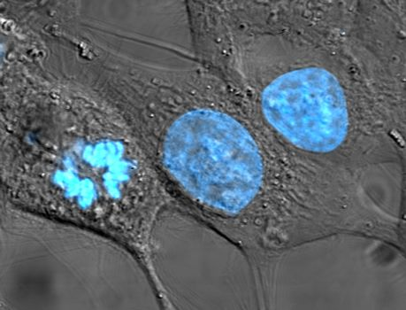

The science of life — from molecules to ecosystems, cells to consciousness
Life is organized from atoms → molecules → cells → tissues → organs → organisms → populations → ecosystems.
Chemical processes that convert energy and matter. Anabolism (build) + catabolism (break down).
Increase in size and complexity. At cellular level: cell division and enlargement.
Maintaining stable internal conditions (pH, temperature, ion balance) despite external changes.
Producing offspring. Sexual (genetic recombination) or asexual (identical copies).
Detecting and responding to environmental stimuli. Tropisms, reflexes, behavior.
Over generations, populations change through natural selection to suit their environment.



| Field | Studies |
|---|---|
| Molecular Biology | DNA, RNA, proteins, gene expression at the molecular level |
| Cell Biology | Structure and function of cells — organelles, membranes, division |
| Genetics | Inheritance, genes, chromosomes, mutations, genomics |
| Evolutionary Biology | Origin and change of species over time; natural selection |
| Ecology | Interactions between organisms and their environment |
| Physiology | Function of organ systems in living organisms |
| Microbiology | Bacteria, viruses, fungi, protozoa |
| Neuroscience | Nervous systems, brains, behavior, and consciousness |
| Botany | Plants — photosynthesis, growth, classification |
| Zoology | Animals — anatomy, behavior, classification |
| Feature | Prokaryote | Eukaryote |
|---|---|---|
| Nucleus | No (nucleoid) | Yes (membrane-bound) |
| Size | 1–10 μm | 10–100 μm |
| Organelles | None (membrane-bound) | Many |
| DNA | Circular, in cytoplasm | Linear, in nucleus |
| Examples | Bacteria, Archaea | Plants, animals, fungi |
| Organelle | Function |
|---|---|
| Nucleus | DNA storage, gene expression control |
| Mitochondria | ATP production (cellular respiration) |
| Ribosome | Protein synthesis |
| ER (rough) | Protein folding and modification |
| ER (smooth) | Lipid synthesis, detoxification |
| Golgi apparatus | Sorting and packaging proteins |
| Lysosome | Digestion of waste/foreign material |
| Chloroplast | Photosynthesis (plant cells) |
| Cell wall | Structural support (plants, fungi, bacteria) |
Stage 1 — Glycolysis: Glucose → 2 pyruvate in cytoplasm. Net 2 ATP.
Stage 2 — Krebs Cycle: Pyruvate → CO₂ in mitochondrial matrix. 2 ATP + NADH/FADH₂.
Stage 3 — Electron Transport: NADH/FADH₂ → ATP via oxidative phosphorylation. ~32-34 ATP.
Light reactions: Chlorophyll absorbs light → ATP + NADPH + O₂. Occurs in thylakoid membranes.
Calvin cycle: ATP + NADPH fix CO₂ → glucose. Occurs in stroma.
Photosynthesis and respiration are complementary: one builds glucose from CO₂, the other breaks it back down.
Mitosis: Somatic cell division — produces 2 identical daughter cells. PMAT phases (Prophase, Metaphase, Anaphase, Telophase). Used for growth and repair.
Meiosis: Produces gametes (sperm/egg). Two divisions yield 4 haploid cells with half the chromosomes. Crossing over creates genetic diversity.
Phospholipid bilayer with embedded proteins. Hydrophilic heads face outward; hydrophobic tails face inward (fluid mosaic model).
Transport types:
Passive: diffusion, osmosis, facilitated diffusion (no energy)
Active: uses ATP to move against concentration gradient (Na⁺/K⁺ pump)
Endocytosis/exocytosis: bulk transport via vesicles
Double helix of two antiparallel nucleotide strands. Each nucleotide: deoxyribose sugar + phosphate + nitrogenous base.
Base pairs (Watson-Crick): A–T (2 H-bonds), G–C (3 H-bonds)
Human genome: ~3.2 billion base pairs, ~20,000–25,000 protein-coding genes, packed into 23 chromosome pairs per cell.
Transcription: DNA template → mRNA in nucleus. RNA polymerase unwinds DNA and builds complementary mRNA strand.
Translation: mRNA → protein at ribosomes. tRNA brings amino acids; codons (3 bases) specify each amino acid.
Law of Segregation: Each organism has two alleles for each trait; these separate during gamete formation.
Law of Independent Assortment: Genes on different chromosomes assort independently.
Dominant (A) masks recessive (a). Genotype: AA (homozygous dominant), Aa (heterozygous), aa (homozygous recessive).
| Type | Effect |
|---|---|
| Point (substitution) | One base changed; may be silent, missense, or nonsense |
| Insertion/Deletion | Frameshift — alters all downstream codons |
| Chromosomal | Deletion, duplication, inversion, translocation of segments |
| Aneuploidy | Wrong number of chromosomes (e.g., trisomy 21 = Down syndrome) |
Not all genes are expressed in all cells all the time. Regulation occurs at multiple levels:
Transcription factors bind promoter regions to activate/repress transcription.
Epigenetics: DNA methylation and histone modification alter gene expression without changing DNA sequence. Can be heritable.
RNA interference (RNAi): Small RNA molecules silence specific mRNAs.
PCR (Polymerase Chain Reaction): Amplifies specific DNA sequences exponentially. Foundation of genetic testing, forensics, COVID tests.
CRISPR-Cas9: Precise gene editing — the molecular scissors. Guide RNA directs Cas9 enzyme to cut DNA at exact target. Revolutionary for medicine and research.
Gel Electrophoresis: Separates DNA fragments by size. Used in DNA fingerprinting.
Carl Linnaeus (1735) established a hierarchical classification system still used today.
| Rank | Human example |
|---|---|
| Domain | Eukaryota |
| Kingdom | Animalia |
| Phylum | Chordata |
| Class | Mammalia |
| Order | Primates |
| Family | Hominidae |
| Genus | Homo |
| Species | sapiens |
Bacteria: Prokaryotes. Most abundant organisms. E. coli, Streptococcus, cyanobacteria. Include both beneficial gut flora and pathogens.
Archaea: Prokaryotes, genetically closer to eukaryotes. Extremophiles (hot springs, salt lakes, deep sea vents). Methanogens in wetlands and guts.
Eukaryota: Membrane-bound nucleus. Protists, Fungi, Plants, Animals.
| Phylum | Examples |
|---|---|
| Chordata | Fish, amphibians, reptiles, birds, mammals |
| Arthropoda | Insects, spiders, crabs, shrimp |
| Mollusca | Snails, clams, octopus, squid |
| Nematoda | Roundworms (most abundant animal on Earth) |
| Echinodermata | Sea stars, sea urchins, sea cucumbers |
| Porifera | Sponges |
| Cnidaria | Jellyfish, corals, sea anemones |
| Annelida | Earthworms, leeches |
Not technically alive — no metabolism, can't reproduce independently. Protein capsid + nucleic acid (DNA or RNA). Some have lipid envelopes.
Hijack host cell machinery to replicate. HIV, influenza, SARS-CoV-2, herpes, bacteriophages.
Bacteriophages: viruses that infect bacteria. Used in phage therapy to fight antibiotic-resistant bacteria.
Eukaryotic, heterotrophic decomposers. Cell walls of chitin. Absorb nutrients by secreting enzymes externally.
Yeasts (unicellular), molds (multicellular hyphae), mushrooms (fruiting bodies of larger fungi).
Mycorrhizae: symbiotic fungi on plant roots — extend nutrient absorption enormously. Most land plants depend on them.
Penicillin was discovered from Penicillium mold (Fleming, 1928).
Multicellular photosynthetic eukaryotes. Cell walls of cellulose. Colonized land ~470 million years ago.
| Group | Feature | Examples |
|---|---|---|
| Bryophytes | No vascular tissue | Mosses, liverworts |
| Pteridophytes | Vascular, no seeds | Ferns, horsetails |
| Gymnosperms | Seeds, no flowers | Pines, spruce, ginkgo |
| Angiosperms | Flowers, enclosed seeds | Most flowering plants |
Central (brain + spinal cord) + Peripheral nervous system. ~86 billion neurons. Action potentials (electrical signals) travel along axons. Synapses transmit signals via neurotransmitters.
Brain regions: cerebrum (thought, language, sensory), cerebellum (coordination), brainstem (breathing, heart rate), limbic system (emotion, memory).
Heart + blood vessels + blood. ~5 liters of blood. Heart pumps ~70 times/min at rest = ~100,000 beats/day.
Arteries carry oxygenated blood away from heart. Veins return deoxygenated blood. Capillaries enable gas/nutrient exchange.
Innate immunity: First line of defense — skin, mucus, inflammation, natural killer cells, phagocytes. Non-specific, fast.
Adaptive immunity: T cells (cell-mediated) and B cells (antibody-mediated). Specific to pathogen. Creates immunological memory — basis of vaccination.
Antibodies: Y-shaped proteins that bind specific antigens (unique molecular shapes on pathogens).
Glands secrete hormones into bloodstream to regulate physiology.
| Gland | Hormone | Function |
|---|---|---|
| Pituitary | GH, TSH, LH, FSH | Master gland, controls others |
| Thyroid | T3/T4 | Metabolism rate |
| Adrenal | Adrenaline, cortisol | Stress response |
| Pancreas | Insulin, glucagon | Blood glucose regulation |
Mouth → esophagus → stomach → small intestine → large intestine → rectum.
Small intestine (~6m): most nutrient absorption. Villi and microvilli massively increase surface area (~250 m²).
Liver: produces bile, detoxifies blood, metabolizes drugs, stores glycogen.
Gut microbiome: ~38 trillion bacteria in the human gut, critical for health.
Lungs: ~500 million alveoli provide ~70 m² of surface area for gas exchange.
O₂ diffuses from alveoli into capillaries; CO₂ diffuses out. Hemoglobin carries O₂ in red blood cells.
Breathing rate controlled by CO₂ levels in blood (detected by brainstem chemoreceptors).
Individual: Single organism.
Population: Same species in same area.
Community: All species in an area interacting.
Ecosystem: Community + abiotic environment (soil, water, climate).
Biome: Large-scale ecosystem type (rainforest, tundra, coral reef).
Biosphere: All life on Earth.
Only ~10% of energy transfers between trophic levels (rest lost as heat). A 1,000 kg of plant supports ~100 kg herbivore, ~10 kg carnivore.
Food webs show the complex interconnections between species. Keystone species have outsized ecosystem effects.
Carbon cycle: CO₂ absorbed by plants (photosynthesis), returned by respiration/decomposition/combustion. Oceans are the largest carbon sink.
Nitrogen cycle: N₂ fixed by bacteria → NH₃ → nitrification → NO₃⁻ → plant uptake → decomposition → denitrification → N₂.
Water cycle: Evaporation, condensation, precipitation, runoff, transpiration, groundwater.
| Interaction | Species A | Species B |
|---|---|---|
| Mutualism | + benefit | + benefit |
| Commensalism | + benefit | neutral |
| Predation/Parasitism | + benefit | – harm |
| Competition | – harm | – harm |
| Amensalism | neutral | – harm |
Earth has ~8.7 million species estimated; only ~1.5 million formally described. Current extinction rate is 1,000× the background rate — the "Sixth Mass Extinction."
Threats: habitat loss, climate change, pollution, overexploitation, invasive species.
Biodiversity hotspots: Amazon, Congo Basin, coral triangle, Madagascar, California Floristic Province.
| Biome | Climate |
|---|---|
| Tropical rainforest | Hot, wet year-round (>2000mm rain) |
| Savanna | Warm, distinct wet/dry seasons |
| Desert | <250mm rain/year |
| Temperate forest | Seasonal, moderate rain |
| Boreal forest (taiga) | Cold winters, short summers |
| Tundra | Permafrost, treeless, <250mm rain |